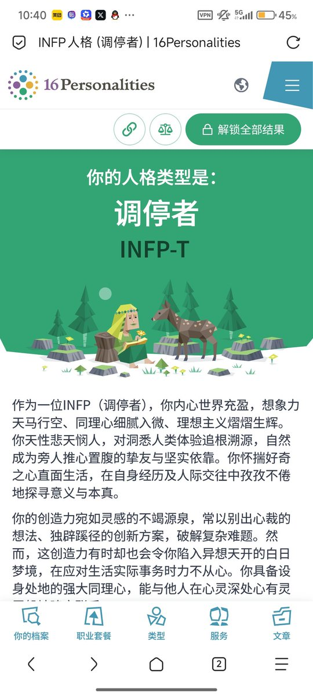

@OPPOFANS114514 去年和今年都测了一遍，虽然看起来差不多，但是感觉自己变化了许多


@tingxinzhongyu 半年前和现在好像没什么变化诶，又好像变化许多
6月15日 INFP-A (调停者) 内向 – 97%, 天马行空 – 56%, 情感细腻 – 87%, 随机应变 – 57%, 自信果断 – 56%
2月20日 INFP-A (调停者) 内向 – 86%, 天马行空 – 69%, 情感细腻 – 82%, 随机应变 – 63%, 自信果断 – 83%; 角色: 外交家; 策略: 自信个人主义
6月15日 INFP-A (调停者) 内向 – 97%, 天马行空 – 56%, 情感细腻 – 87%, 随机应变 – 57%, 自信果断 – 56%
2月20日 INFP-A (调停者) 内向 – 86%, 天马行空 – 69%, 情感细腻 – 82%, 随机应变 – 63%, 自信果断 – 83%; 角色: 外交家; 策略: 自信个人主义